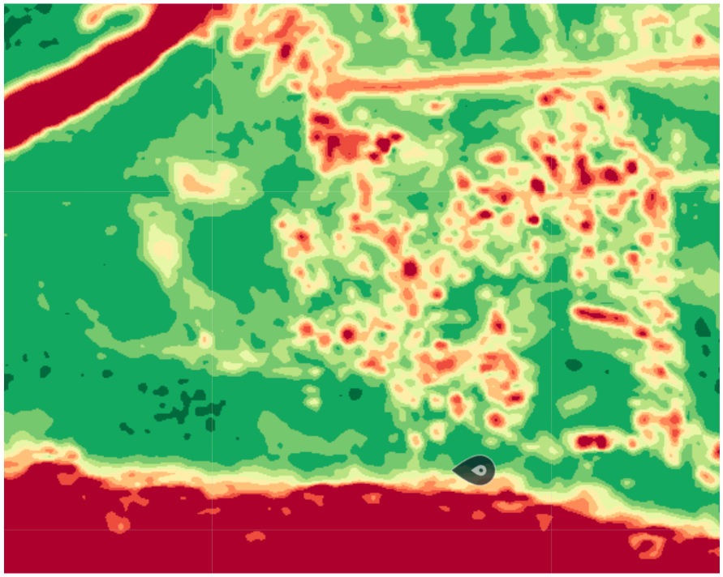
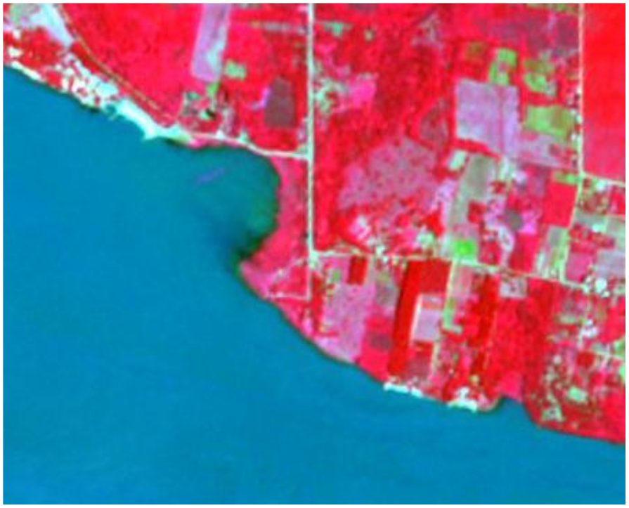

This report maps and corroborates human trafficking infrastructure across the Tri-Border Area (TBA) corridor using open-source satellite imagery, prosecutorial data, and documentary evidence. Three crossing sites were assessed — each representing a distinct modality — supported by multi-temporal Sentinel-2 spectral analysis, Google Earth Pro imagery, and cross-referencing against Brazil's forced-labour enforcement database (Lista Suja). The assessment identifies structural indicators of clandestine access at two sites, documents a systematic forced-labour absorption pattern in the Pantanal border zone, and establishes that the three sites function as an integrated system offering trafficking networks operational flexibility across formal, informal, and clandestine crossing types.

Low-NDVI zone at shoreline consistent with informal dock infrastructure

Linear corridor inland from riverbank — vehicle access track beyond inspection range
Lake Itaipú · BR/PY
P.J. Caballero · BR/PY
Paraná River · AR/PY
The multi-source OSINT assessment demonstrates that trafficking infrastructure in the TBA operates across a spectrum of formality — from clandestine riverbank access to high-volume formal bridge crossings — with each modality presenting vulnerabilities that conventional enforcement is structurally ill-equipped to address alone. The convergence of satellite indicators, Lista Suja prosecutorial data, and documented criminal network activity produces a coherent picture of a region where exploitation is sustained by geography, institutional capacity gaps, and the concealment afforded by the volume of legitimate commerce.